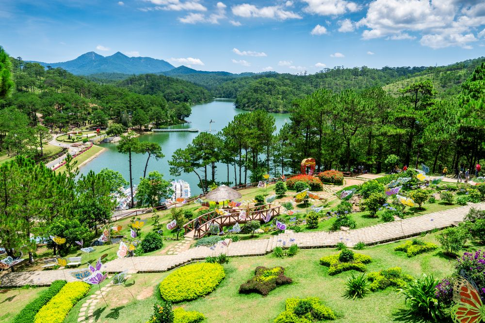

- Đăng nhập
- Đăng kí

Đà Lạt, thành phố thuộc tỉnh Lâm Đồng, nằm trong vùng cao nguyên của miền Trung Việt Nam. Với khí hậu mát mẻ quanh năm và cảnh quan thiên nhiên tuyệt đẹp, Đà Lạt được mệnh danh là "thành phố sương mù và hoa".

Một trong những địa điểm nổi tiếng ở Đà Lạt là Công viên Hoàng Văn Thụ, nơi có rất nhiều loài hoa độc đáo và màu sắc phong phú. Đà Lạt cũng có nhiều danh lam thắng cảnh tuyệt đẹp như Hồ Xuân Hương, Thung lũng Tình yêu, Đồi Mộng Mơ, và nhiều hồ nước mênh mông khác.
Du khách đến Đà Lạt còn có thể tham gia các hoạt động như leo núi, thám hiểm hang động, hay tham quan các trang trại hoa và trang trại rau sạch. Đà Lạt cũng nổi tiếng với các món ăn ngon như bánh tráng nướng, bánh căn, và một loạt các loại đặc sản địa phương.

Hãy dành thời gian để tham quan Đà Lạt và khám phá vẻ đẹp độc đáo của thành phố này. Đà Lạt chắc chắn sẽ để lại cho bạn những kỷ niệm đáng nhớ.
Quay về đầu trang434/46/25E Bình quới, Phường 28, Quận Bình Thạnh, TP.Hồ Chí Minh
0917779407
phanminhhien0701@gmail.com